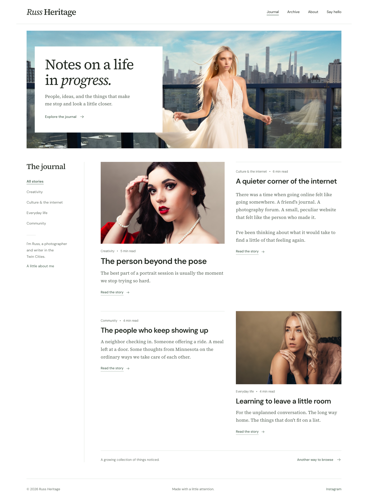
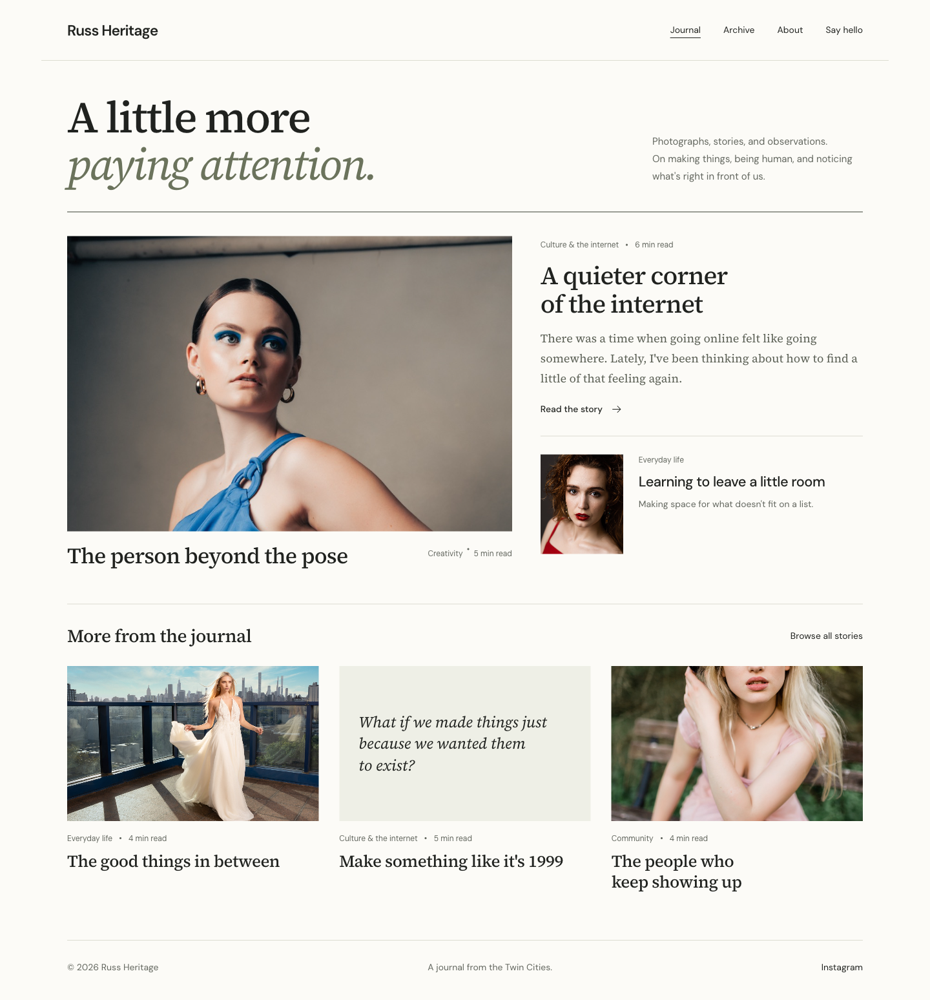
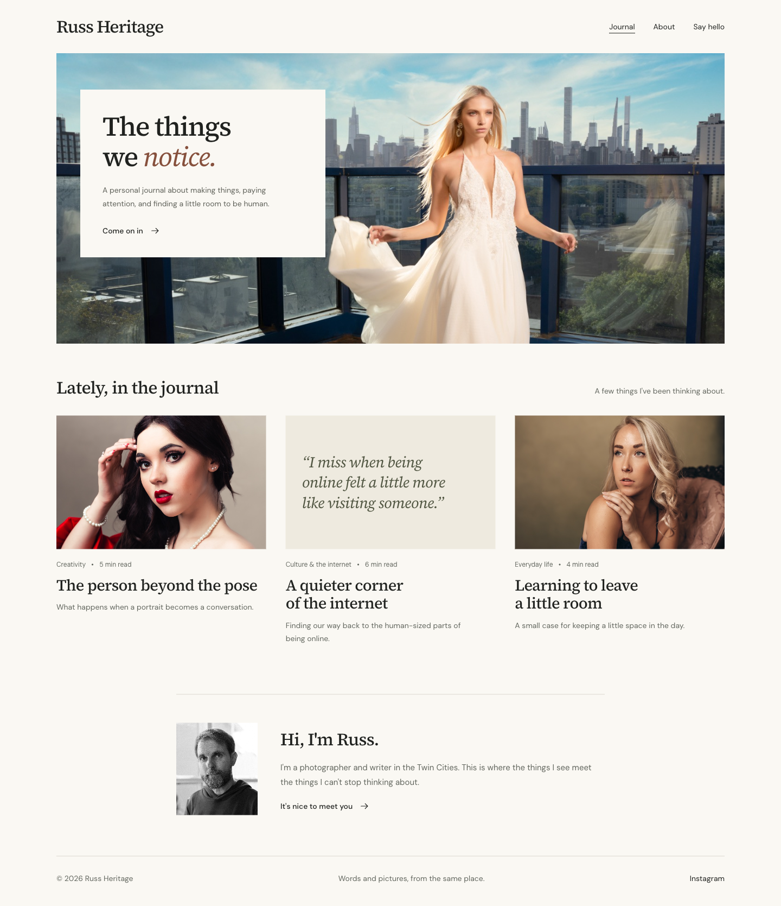
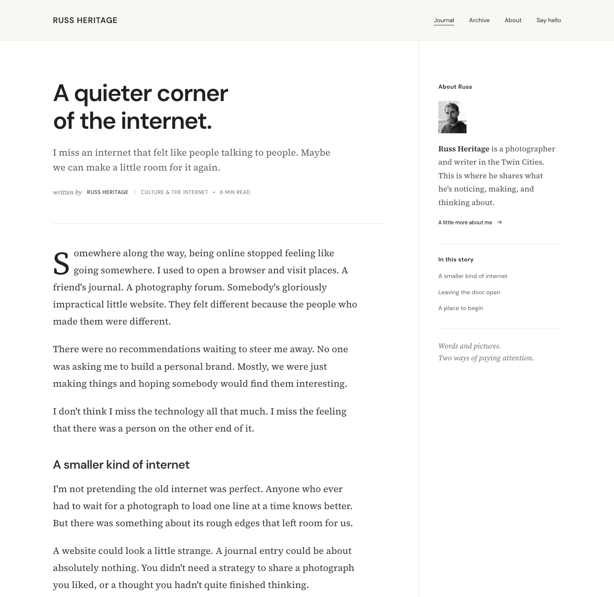

A The Open Journal
A more personal masthead, quiet green accents, and a photographic opening. A spacious feed weaves photographs and essays together.
Explore this directionThree homepage directions and one reading layout. All bring photographs, essays, and observations into the same space.

A more personal masthead, quiet green accents, and a photographic opening. A spacious feed weaves photographs and essays together.
Explore this direction
A stronger editorial point of view. One photograph leads, a featured essay sits alongside, and the page rewards a slower look.
Explore this direction
The warmest first impression. An expansive image and a short introduction invite people in, followed by a single journal feed.
Explore this direction
A companion article layout for any of the three directions. Clean headlines, generous margins, a comfortable serif reading face, and a quiet author sidebar, following the James Clear reference.
Explore the article layoutDesign mockups for discussion. Headlines, article text, excerpts, and reading times are illustrative, inspired by your current work. The photographs are from your existing website. The live site has not been changed.